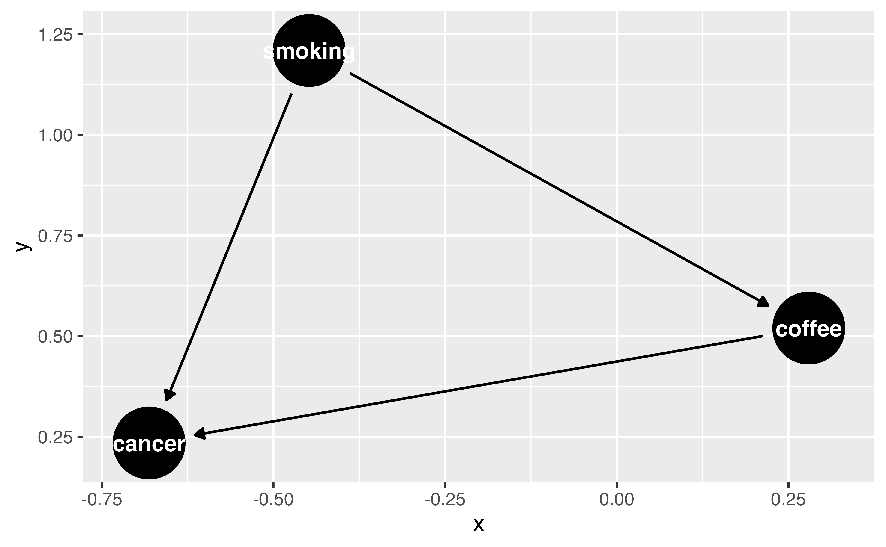
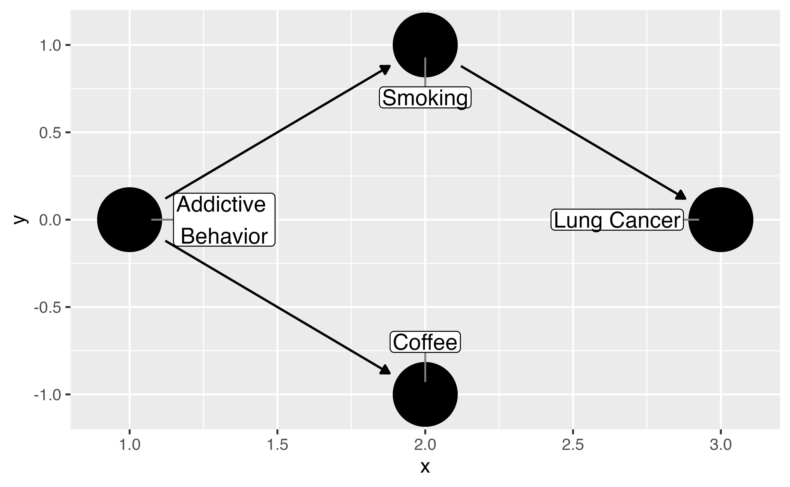

Causal Diagrams in R
Malcolm Barrett
Stanford University
Draw your causal assumptions with causal directed acyclic graphs (DAGs)
The basic idea
- Specify your causal question
- Use domain knowledge
- Write variables as nodes
- Write causal pathways as arrows (edges)


Step 1: Specify your DAG
Step 1: Specify your DAG
Step 1: Specify your DAG
Step 1: Specify your DAG
Step 1: Specify your DAG

Your Turn 1 (04-dags-exercises.qmd)
Specify a DAG with dagify(). Write your assumption that smoking causes cancer as a formula.
We’re going to assume that coffee does not cause cancer, so there’s no formula for that. But we still need to declare our causal question. Specify “coffee” as the exposure and “cancer” as the outcome (both in quotations marks).
Plot the DAG using ggdag()
Finish early? Try the stretch goals
05:00 Your Turn 1 (02-dags-exercises.qmd)
Causal effects and backdoor paths
Ok, correlation != causation. But why not?
We want to know if x -> y…
But other paths also cause associations
ggdag_paths()
Identify “backdoor” paths
Your Turn 2
Call tidy_dagitty() on coffee_cancer_dag to create a tidy DAG, then pass the results to dag_paths(). What’s different about these data?
Plot the open paths with ggdag_paths(). (Just give it coffee_cancer_dag rather than using dag_paths(); the quick plot function will do that for you.) Remember, since we assume there is no causal path from coffee to lung cancer, any open paths must be confounding pathways.
Finish early? Try the stretch goals
04:00 Your Turn 2
# A DAG with 4 nodes and 3 edges
#
# Exposure: coffee
# Outcome: cancer
#
# A tibble: 5 × 11
set name x y direction to xend yend
<chr> <chr> <dbl> <dbl> <fct> <chr> <dbl> <dbl>
1 1 addictive -1.59 -2.26 -> coffee -2.72 -1.83
2 1 addictive -1.59 -2.26 -> smoki… -0.334 -2.73
3 1 cancer 0.801 -3.16 <NA> <NA> NA NA
4 1 coffee -2.72 -1.83 <NA> <NA> NA NA
5 1 smoking -0.334 -2.73 -> cancer 0.801 -3.16
# ℹ 3 more variables: circular <lgl>, label <chr>,
# path <chr>Closing backdoor paths
We need to account for these open, non-causal paths
Randomization
Stratification, adjustment, weighting, matching, etc.
Identifying adjustment sets
Identifying adjustment sets
Identifying adjustment sets
Your Turn 3
Now that we know the open, confounding pathways (sometimes called “backdoor paths”), we need to know how to close them! First, we’ll ask {ggdag} for adjustment sets, then we would need to do something in our analysis to account for at least one adjustment set (e.g. multivariable regression, weighting, or matching for the adjustment sets).
Use ggdag_adjustment_set() to visualize the adjustment sets. Add the arguments use_labels = "label" and text = FALSE.
Write an R formula for each adjustment set, as you might if you were fitting a model in lm() or glm()
Finish early? Try the stretch goals
04:00 Your Turn 3
Your Turn 3
Your Turn 3
Let’s prove it!
Let’s prove it!
# A tibble: 500 × 4
addictive cancer coffee smoking
<dbl> <dbl> <dbl> <dbl>
1 0.0708 2.87 -0.565 -1.79
2 0.626 1.63 0.434 -1.35
3 1.98 1.43 -0.182 -1.62
4 -0.198 -0.223 0.133 0.960
5 1.66 0.0696 0.437 0.0954
6 1.37 0.765 -2.18 -1.41
7 0.791 0.0460 -0.745 -0.876
8 0.531 0.813 -1.44 -0.432
9 -0.861 0.708 0.415 0.220
10 -1.40 0.801 0.439 0.472
# ℹ 490 more rowsLet’s prove it!
Time-ordering
don’t adjust for the future!
Your Turn 4
Recreate the DAG we’ve been working with using time_ordered_coords(), then visualize the DAG. You don’t need to use any arguments for this function, so coords = time_ordered_coords() will do.
02:00 Your Turn 4
coffee_cancer_dag_to <- dagify(
cancer ~ smoking,
smoking ~ addictive,
coffee ~ addictive,
exposure = "coffee",
outcome = "cancer",
coords = time_ordered_coords(),
labels = c(
"coffee" = "Coffee",
"cancer" = "Lung Cancer",
"smoking" = "Smoking",
"addictive" = "Addictive \nBehavior"
)
)
ggdag(coffee_cancer_dag_to, use_labels = "label", text = FALSE)Your Turn 4

Choosing what variables to include
Adjustment sets and domain knowledge
Conduct sensitivity analysis if you don’t have something important
Common trip ups
Using prediction metrics
The 10% rule
Predictors of the outcome, predictors of the exposure
Forgetting to consider time-ordering (something has to happen before something else to cause it!)
Selection bias and colliders (more later!)
Incorrect functional form for confounders (e.g. BMI often non-linear)